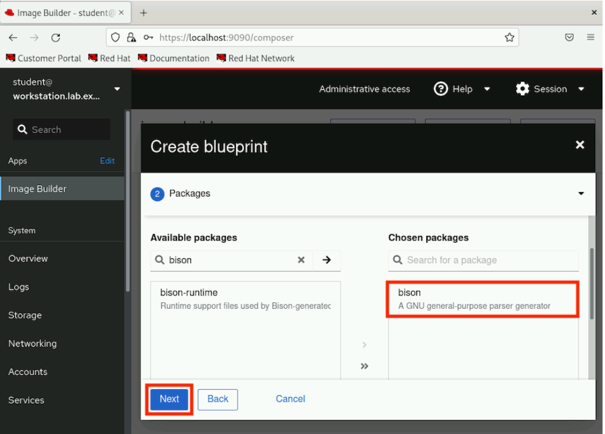
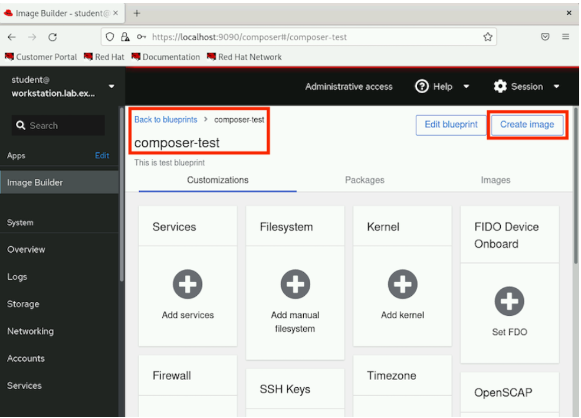

Guided Exercise: Create a blueprint and image
Create a blueprint and its corresponding image by using the web console.
Outcomes
-
Create a
blueprintand the corresponding image by using the web console.-
Install
osbuild-composer, composer-cli, cockpit-composer, bash-completionand their dependencies onworkstation. -
Create a blueprint called composer-test on the workstation machine.
-
Add the bison package to the composer-test blueprint.
-
Create a tar image using the composer-test blueprint.
-
As the student user on the workstation machine, use the lab command to prepare your environment for this exercise, and to ensure that all required resources are available.
[student@workstation ~]$ lab start imagebuilder-create
Note: Image builder usually requires a subscription to work. The lab start script configures this lab in a way that you do not need a subscription (uses local dvd repos). In your own systems, you need to subscribe them to use image builder. For information on this workaround you can refer https://bugzilla.redhat.com/show_bug.cgi?Bugzilla_restrictlogin=on&id=1915351[RFE: be able to use composer without CDN connection]
Instructions
The lab start script installed the osbuild-composer, composer-cli, cockpit-composer, bash-completion packages and their dependencies on workstation.lab.example.com.
-
Start and enable image builder and cockpit sockets.
[student@workstation ~]$ sudo systemctl enable --now osbuild-composer.socket Created symlink /etc/systemd/system/sockets.target.wants/osbuild-composer.socket → /usr/lib/systemd/system/osbuild-composer.socket.
[student@workstation ~]$ sudo systemctl enable --now cockpit.socket Created symlink /etc/systemd/system/sockets.target.wants/cockpit.socket → /usr/lib/systemd/system/cockpit.socket.
-
Load the shell configuration script so that the autocomplete feature for the composer-cli command starts working immediately without reboot.
[student@workstation ~]$ source /etc/bash_completion.d/composer-cli
-
To run the
composer-clicommands as a non-root user, the user must be in theweldor the root group.-
To add the
studentuser to theweldror therootgroup, run the following commands.-
Enter the sudo password
studentwhen prompted. [student@workstation ~]$ sudo usermod -a -G weldr student [student@workstation ~]$ newgrp weldr
-
-
Check the sources configured for image builder.
[student@workstation ~]$ composer-cli sources list appstream baseos [student@workstation ~]$ composer-cli sources info baseos check_gpg = false check_repogpg = false check_ssl = true gpgkeys = [...output omitted...] id = "baseos" name = "baseos" rhsm = false system = true type = "yum-baseurl" url = "http://content.example.com/rhel9.0/x86_64/dvd/BaseOS"
[student@workstation ~]$ composer-cli sources info appstream ...output omitted...
-
Notice the url field, it points to the dvd repo. In your own (external to this lab) system, after you subscribe the system and configure image builder, you see the url of Red Hat CDN.
-
-
-
Access the image builder dashboard in the RHEL web console.
-
Visit the GNOME login screen on the
workstationsystem. You can access the console under the Lab Environment tab of this ROLE course and then by clicking the Open Console button beside the workstation machine. -
After the GNOME login screen is visible, click the
studentuser account. Enter student when prompted for the password. -
Navigate to https://localhost:9090/ in the Firefox browser on the
workstationsystem to open the RHELweb console. -
Proceed with the
self-signedcertificate by clicking on Advanced… and Accept the Risk and Continue. -
The login page of the RHEL web console is now visible. Log in by using the username
studentand by entering thestudentpassword. -
Click Turn on administrative access. Enter the password student when prompted and click Authenticate.
-
Now you have administrative access on the
workstationhost.
-
-
Click
Image Builderin the left sidebar and then click Create blueprint. -
For the new blueprint name, use
composer-test. The description is optional, but you can type something in that field, as shown here. After entering details click Next. -
Add the
bisonpackage to thecomposer-testblueprint.-
With the new
blueprintopen, underAvailable packages, typebisonin the filter by name box and press enter. Confirm the results are similar to what is shown here.-
It can take about 2-3 minutes for the search to complete.
-
-
Select the
bisonpackage from the search result. -
Click > to add the selected bison package to Chosen packages.
-
Click Next to proceed.
 -
Keep clicking Next until it reaches the Review section and then click Save.
-
Alternatively, you can reduce the font size in the browser to see the options sidebar. Click Review to directly jump to the review section.
-
-
-
Create a
tarimage using thecomposer-testblueprint.-
With the
composer-testblueprint still open, click Create image. -
In the
Create imagedialog, select Disk Archive (`.tar) as the Image output type and click Next to proceed.
-
In Review section, click Create.
-
Verify that the image creation is added to queue. Click the
Imagestab to see the status. -
On the Images tab, verify the image output Type and image Status.
Note: Wait for the image to be created before continuing. This might take about 5 minutes to complete. To verify the status from a command line, switch to the terminal to the workstation machine and run composer-cli compose list command repeatedly:
[student@workstation ~]$ composer-cli compose list ID Status Blueprint Version Type 838abcf7-a455-4388-b51e-0fea3d406786 RUNNING composer-test 0.0.0 tar
[student@workstation ~]$ composer-cli compose list ID Status Blueprint Version Type 838abcf7-a455-4388-b51e-0fea3d406786 FINISHED composer-test 0.0.0 tar
Verify that the status column changes from RUNNING to FINISHED.
-
Switch to the browser and refresh the web page.
-
Click the
Imagestab to verify that the image status isReady.
-
-
-
Run the grading script to verify your work,
[student@workstation ~]$ lab grade imagebuilder-create Grading lab. SUCCESS Checking lab systems ...output omitted... Overall lab grade: PASS
-
Do not delete the composer-test blueprint because you use it in a later exercise.
-